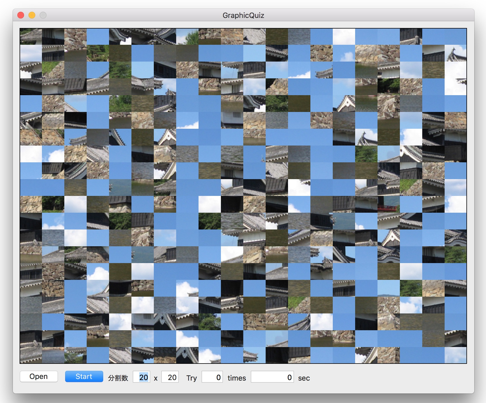
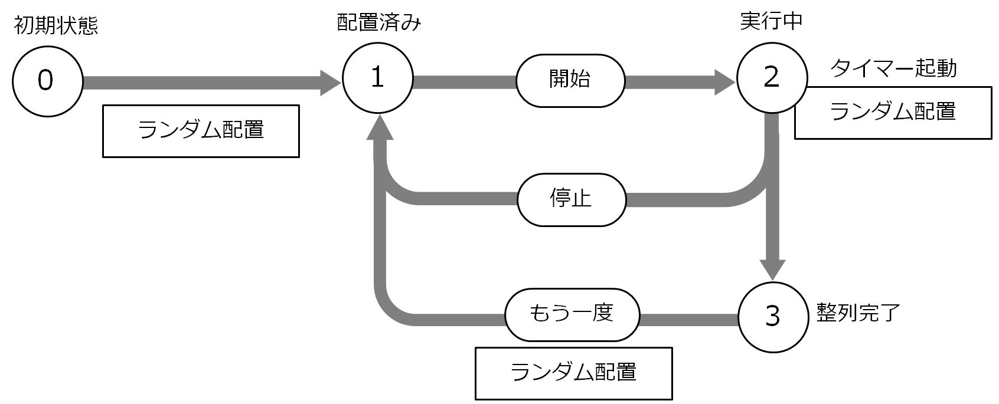

画像当てクイズ（Core Grapjics）

画像をクリックすると動画になります。
オープンパネルからイメージファイル（JPEG, PNG）を読み込み、２次元のマトリックスに分割しランダムに配置する。
処理をスタートするとイメージの再配置を定時間隔で繰り返し、最終的に全ての分割イメージが正しい位置に配置され、本来の画像が表示されたところで終了する。ストップボタンで途中一時停止することができる。
Objective-C版はこちら。以前に作成したものでかなり解りづらい実装になっている。Swift版ではプログラムの構造を見直し、可読性が大いに向上していると思う。
アプリケーションの状態遷移

状態遷移に応じた制御は、状態を表すプロパティを監視し、ステータスが変わったタイミングで必要な処理を起動するようにする。
分割イメージの配置について
800x450ピクセルのイメージをを16分割して表示する例。高さ450ピクセルを4等分すると割り切れないので1ピクセル単位で按分する。
MacOSのフレームワークではビューの座標は左下が原点（0,0）になるが、グラフィックディスプレイの表示では左上が原点となる。そのため16分割したイメージのレイアウトはY軸方向については逆順にする必要がある。
ビューに表示されるイメージは、ベースとなる800x600の大きさのビューの中央に収まるよう実際は余白の分だけ縦方向または横方向に移動する。以下の例では、横長の画像になので、左下のイメージ「M」の表示位置はY軸方向に移動し（0,75）となる。
( 600 - 450 ) / 2 = 75
CGImageクラスの実装のポイント
イメージファイルを読み込み、CGImageイメージを作成する。
CGImageイメージを任意のサイズに変更し、新しいCGImageイメージを作成する。
CGImageイメージから任意のサイズの矩形を切り取り新しいCGImageイメージを作成する。
CGImageイメージをビューに描画する。
メモリ管理について
Swiftでは、CGImageクラスはARCに対応するようになったので、Objective-Cとは異なり、メモリの解放についてはアプリケーションで行う必要はなくなった。
App Sadboxは ON にすること。File Accessは User Selected Fileを Read Onlyに設定する。Sadboxを OFFにすると NSOpenPanelのオープン処理で謎のメモリリークが発生する。